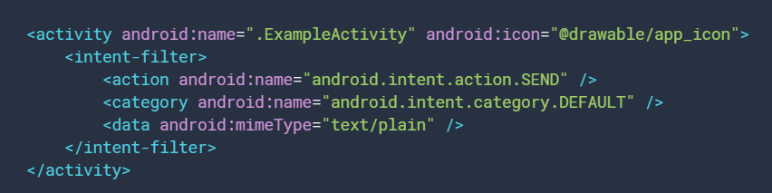

Table of Content
When one app invokes another, the calling app invokes an activity in the other app, rather than the app as an atomic whole. In this way, the activity serves as the entry point for an app's interaction with the user.
An activity provides the window in which the app draws its UI.
Intent filters are a very powerful feature of the Android platform. They provide the ability to launch an activity based not only on an explicit request, but also an implicit one.
Declaring the <category> element as DEFAULT enables the activity to receive launch requests.